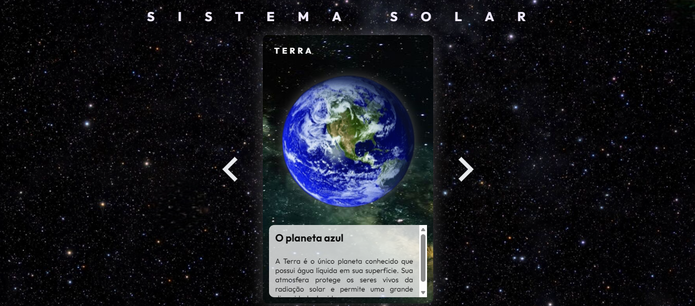
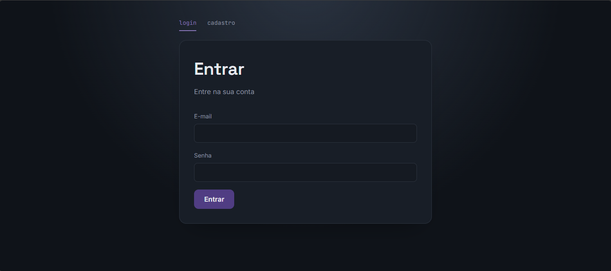

Desenvolvimento de Sistemas
2025/2026
Curso presencial com foco em lógica de programação, desenvolvimento web e banco de dados.
Desenvolvedora
Entusiasta de desenvolvimento de sistemas. Desenvolvo aplicações full-stack com APIs REST e interfaces responsivas. Busco uma oportunidade para aplicar e evoluir meus conhecimentos.
Olá! Meu nome é Eduarda Cristina dos Santos e sou estudante de Desenvolvimento de Sistemas no Senac. Comecei a programar em 2025 e, desde então, venho me dedicando a back-end e front-end por meio de cursos online e projetos práticos.
Tenho interesse especial por desenvolvimento back-end, criando APIs REST com TypeScript, Node.js e TypeORM, além de aplicações em Java com Spring Boot. Também gosto de front-end, criando páginas responsivas, bem estruturadas e acessíveis, e tenho estudado React Native para desenvolvimento mobile.
Busco uma oportunidade de estágio em desenvolvimento web para contribuir com projetos reais e continuar aprendendo em equipe.
2025/2026
Curso presencial com foco em lógica de programação, desenvolvimento web e banco de dados.
Maio/2025 a Julho/2026
Trilhas concluídas com foco em back-end Java, front-end e fundamentos de programação.
Badges digitais verificáveis emitidos por IBM-SkillsBuild e Cisco, com foco em fundamentos de tecnologia, cibersegurança, redes e inteligência artificial.

Site educativo sobre o sistema solar, com informações dos planetas, imagens e layout responsivo para diferentes telas.
Tecnologias: HTML, CSS, JavaScript
O que aprendi: manipulação do DOM, CSS Grid e organização de código.

Aplicação full-stack de cadastro e gerenciamento de usuários, com front-end consumindo uma API REST própria. Permite criar, listar, editar e remover usuários, com persistência em banco MySQL.
Front-end: HTML, CSS, JavaScript (vanilla)
Back-end: TypeScript, Node.js, Express, TypeORM, MySQL
O que aprendi: integração entre front-end e API REST, modelagem de entidades com ORM, consumo de endpoints com fetch e organização de projeto full-stack em repositórios separados.